class: center, middle <!-- In deze textarea kan je in Markdown de slides aanpassen, zie https://github.com/gnab/remark/wiki voor alle mogelijkheden! --> # Hoe muzieksmaak zonder grenzen mij inspireert Muziek inspireert me omdat het niet bij één gevoel hoort. Sommige nummers geven me energie, andere brengen juist rust. Elk genre kwam op een andere manier mijn leven binnen. Met de piano en straks meerdere instrumenten die ik zou willen bespelen wil ik niet alleen luisteren maar er zelf ook onderdeel van zijn. --- # Inhoud Vandaag vertel ik waarom muziek zo belangrijk voor me is en waarom ik ernaar luister, welke instrumenten ik speel en wil leren, naar welke genres ik luister, hoe ik op die genres ben gekomen, en wat afbeeldingen en links. --- # Waarom ik naar muziek luister Muziek kalmeert me op een manier die weinig andere dingen doen. k luister door de dag heen altijd wel naar muziek. het maakt niet uit waar en wanneer ik zet onbewust vaak wel mijn muziek aan. --- # Instrumenten Ik speel zelf piano en wil graag meer instrumenten leren bespelen, bijvoorbeeld d de saxofoon en vooral bassgitaar. En vooraal de basgitaar omdat ik voor een groot deel door de bassist van Kanaboon geïnspireerd ben. Het is een band waar ik al jaren naar luister en de nummers van kana-boon hoor je de baslijn vaak goed op de achtergrond spelen, hun muziek is ook een van mijn favoriete genres. --- # Genres - J-rock : Kanaboon, The Oral Cigarettes, Sambomaster, Asian Kung-Fu Generation, Niko Touches the Walls, Ikimonogakari - Klassiek / Pianomuziek : Debussy, Dmitri Shostakovich (westerse klassieke muziek), Toshifumi Hinata, Hikaru Shirosu (Japans neoklassiek) - Amserikaanse hiphop/rap: Tupac, ASAP Rocky, Ice Cube, Kendrick Lamar, Drake, Childish Gambino, Rihanna, Beyonce - R&B/soul : Michael Jackson, Amerie, Aaliyah, Ashanti , Rihanna, Beyonce - Koreaanse pop/R&B: NCT, DEAN, Sulli, IU, EXO - House/dance : Modjo, Stardust - Jazz : Miles Davis, Bill Evans, John Coltrane, Nina Simone, Ella Fitzgerald --- # Hoe ik een paar van deze genres heb ontdekt Er zijn een aantal genres die ik altijd al leuk heb gevonden zoals hiphop. Je hoorde het ook vrijwel bijna over omdat het een wereldwijde invloed heeft gehad maar Japanse muziek ben ik bijvoorbeeld pas gaan ontdekken nadat ik anime keek als kind, omdat er in de outros en intros vaak Japanse rock of pop muziek werd gespeeld. Jazz en klassieke muziek hoorde ik vaak op school tijdens de kunst vakken. Dus heel veel van deze genres ben ik op verschillende manieren tegengekomen. --- # Fotos <p>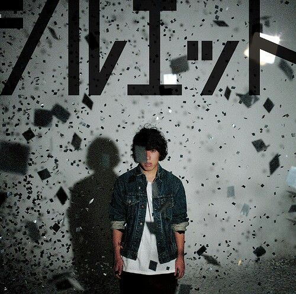</p> <p>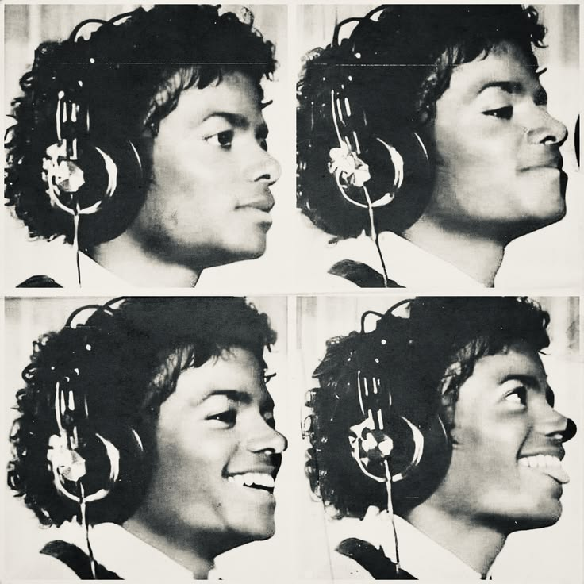</p> <p>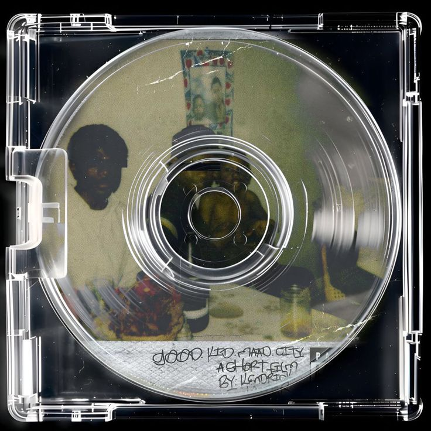</p> <p>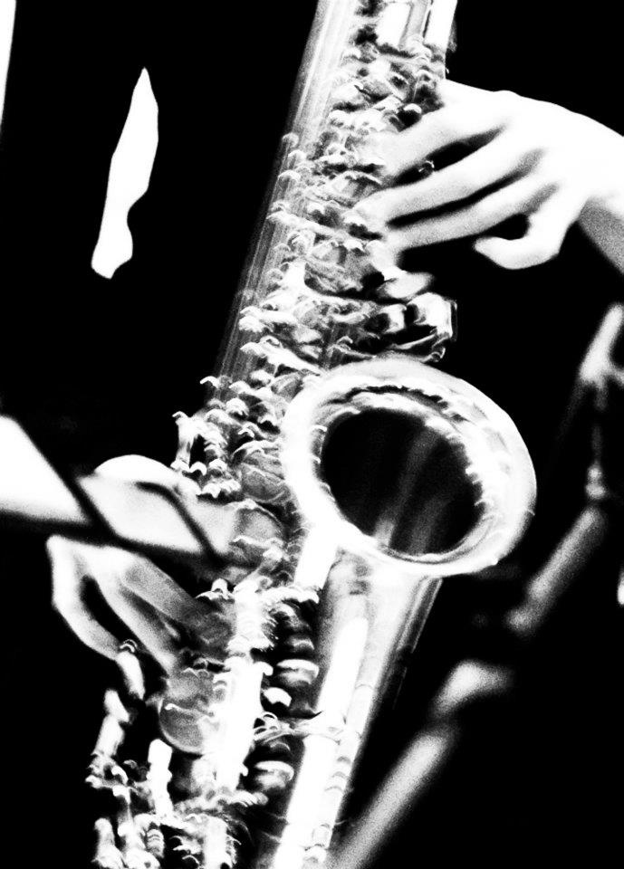</p> <p>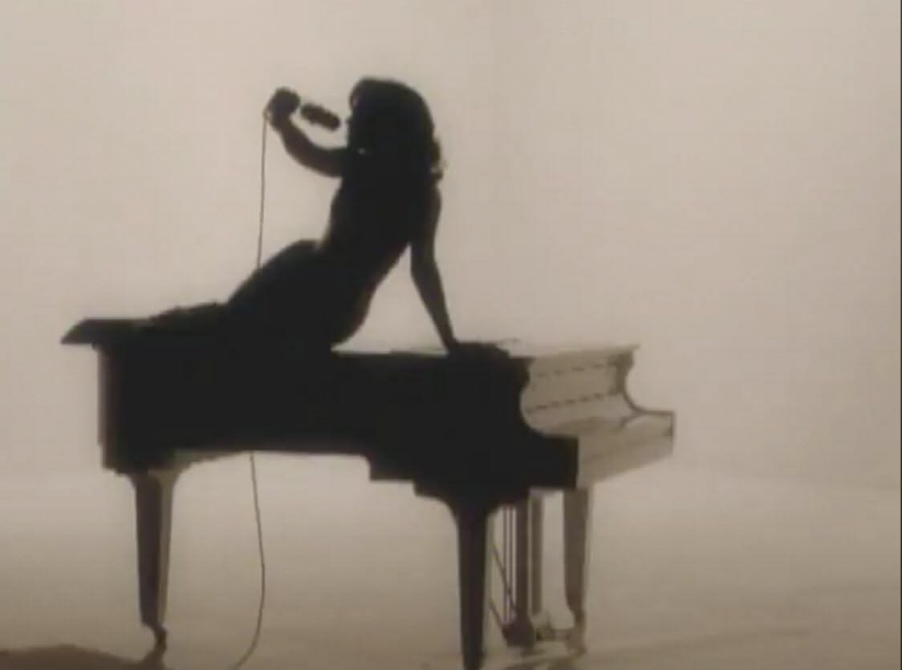</p> <p>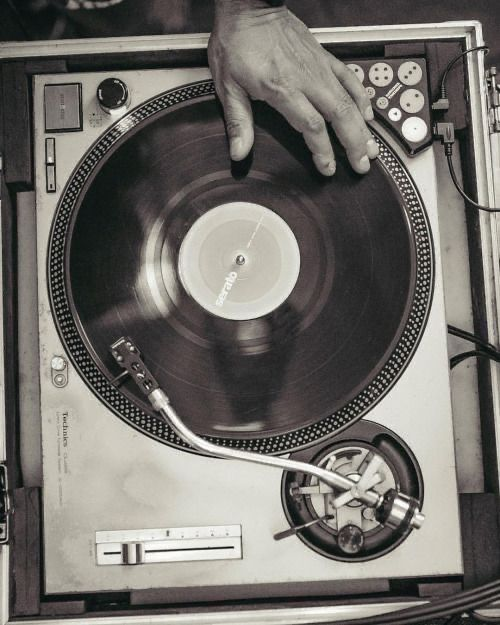</p> <p>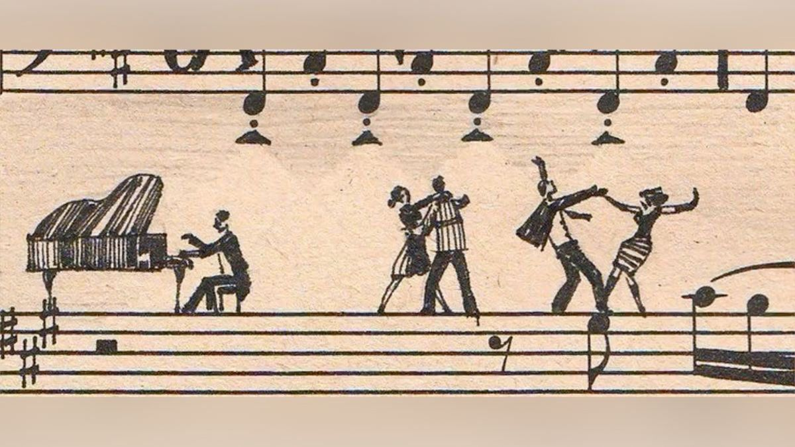</p> <p>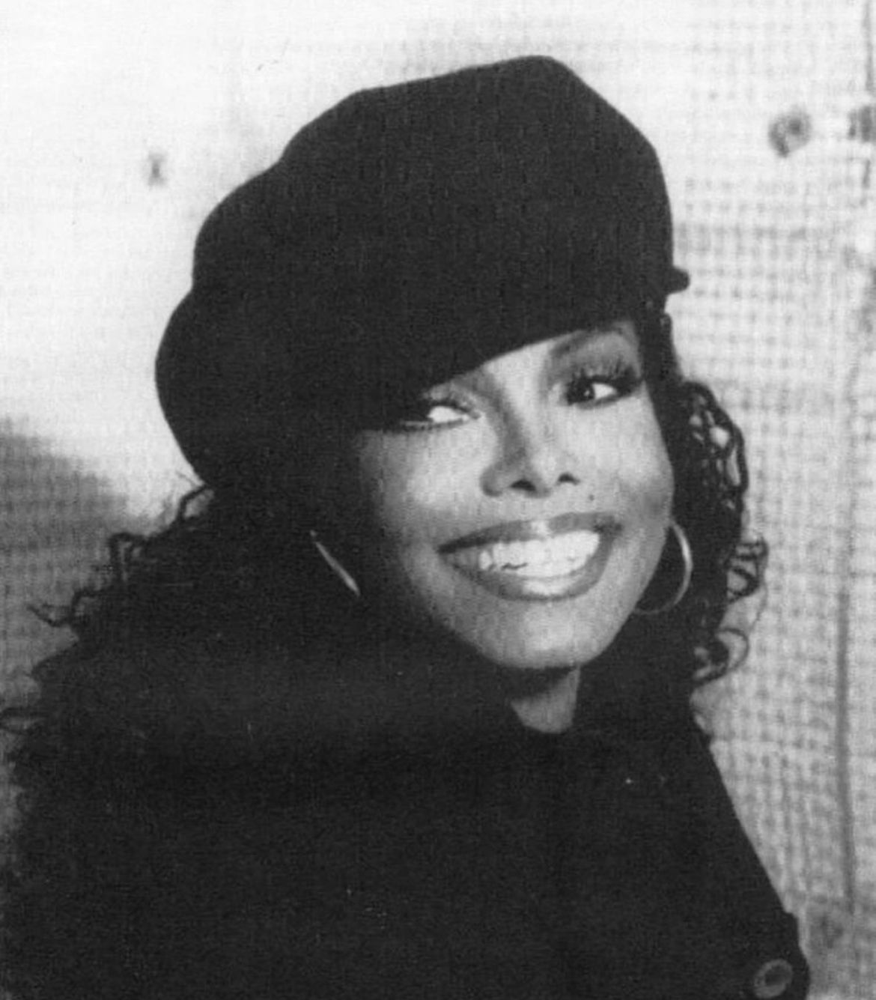</p> <p>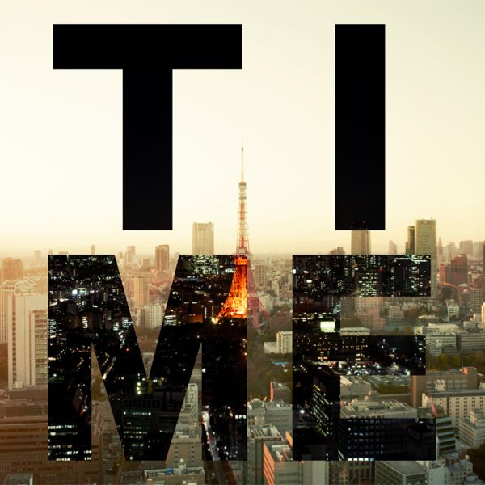</p> <p>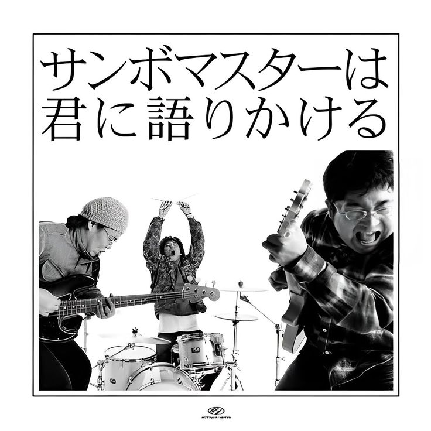</p> <p>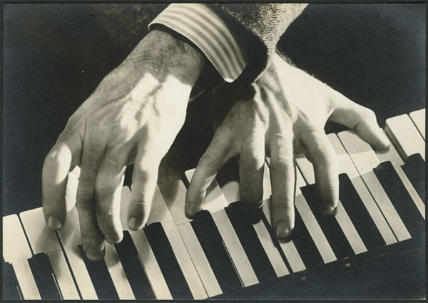</p> <p>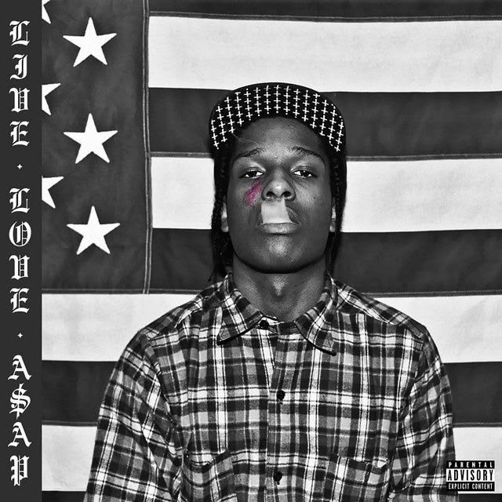</p> <p>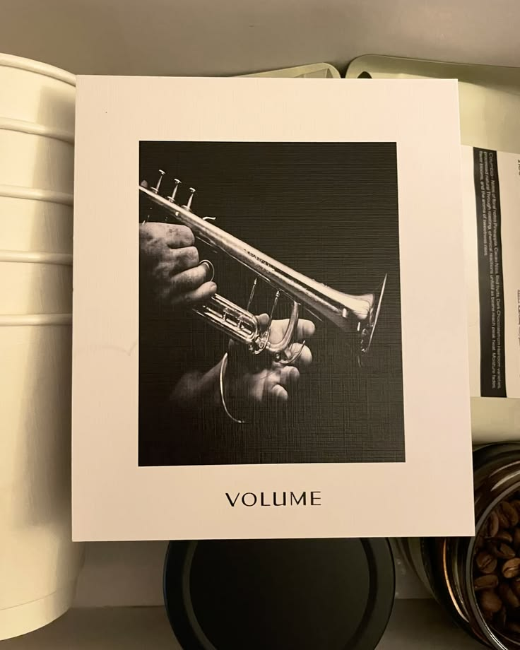</p> <p>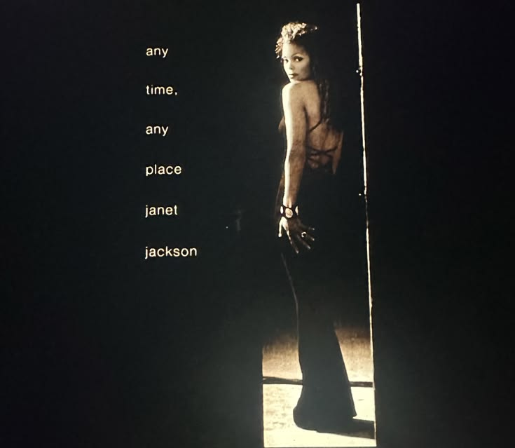</p> <p>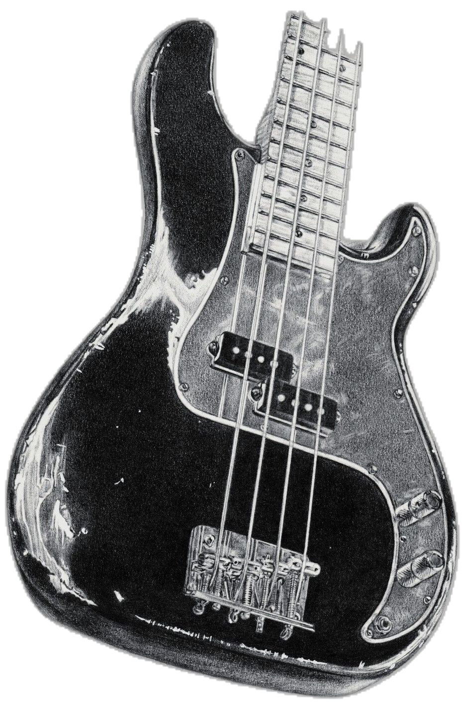</p> <p>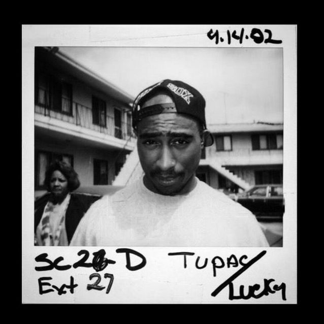</p> # Links - https://www.billboard.com/lists/best-rappers-all-time/16-scarface/ - https://en.wikipedia.org/wiki/French_house - https://mxstl.com/the-power-of-pop-culture-usas-global-influence.html - https://www.youtube.com/channel/UCstRDTx2piIrkCsPmRtmmqA - https://nl.pinterest.com/hikarushirosu/piano-videos-hikaru-shirosu/ - https://www.billboard.com/lists/k-pop-more-global-than-ever-2025-year-end-review/ - https://en.wikipedia.org/wiki/List_of_music_genres_and_styles - https://musicmap.info/ - https://en.wikipedia.org/wiki/King_of_Pop_(album) - https://jrocknews.com/2026/01/top-10-visual-kei-and-japanese-rock-artists-2025.html <!-- Laat onderstaande staan anders breekt je presentatie -->